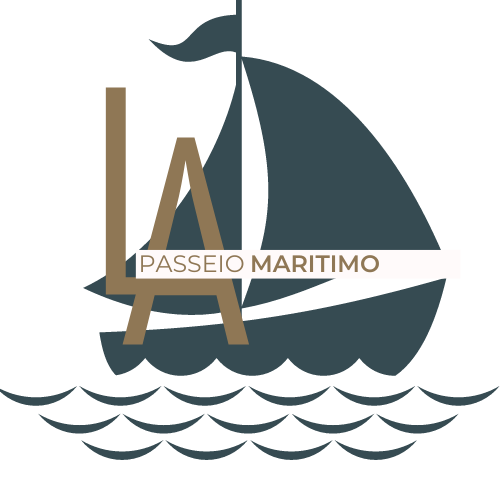

Estadia
Camping Livre
Hotéis dos Mares
Lazer
TurisPar
TOUR PHB
Porto do Artesanato
SkarRoller
Water Kite
Alimentação
Bankai
Gellaticus
Liga On
Transporte
Casa da Aventura
Alug1car
Passeio Marítimo
Bem Veículado
Sobre
Login

HOME
QUEM SOMOS
CONTATOS
PACOTES
L.A Passeio marítimo
venha mergulhar no mar de diversão
Luiz Correia
Saiba Mais
Coqueiro
Saiba Mais
Portinho
Saiba Mais
Delta
Saiba Mais